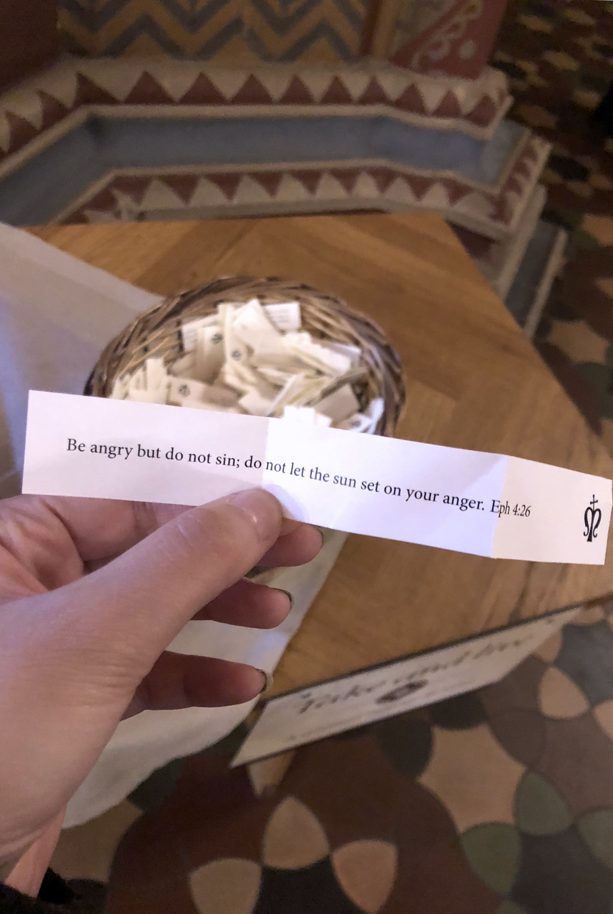
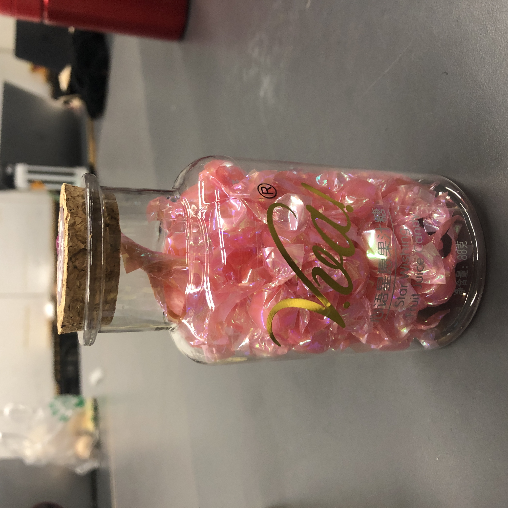
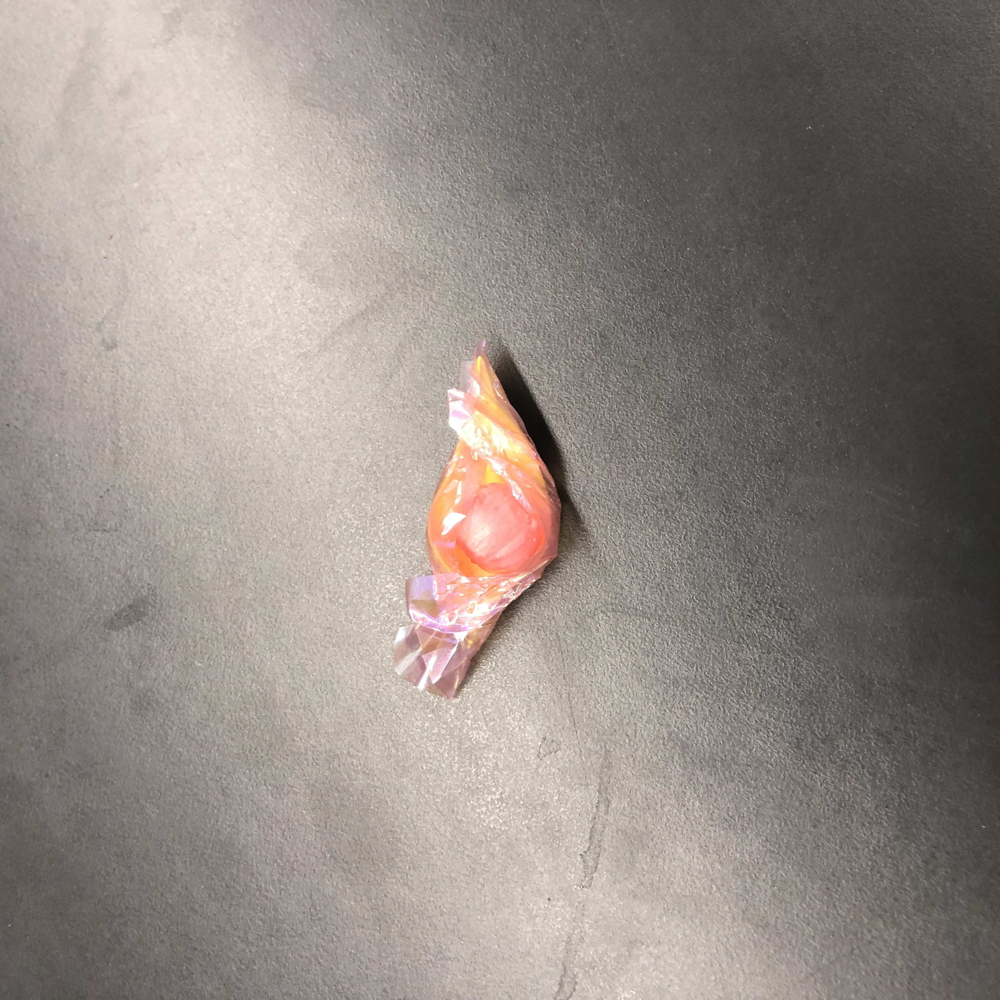
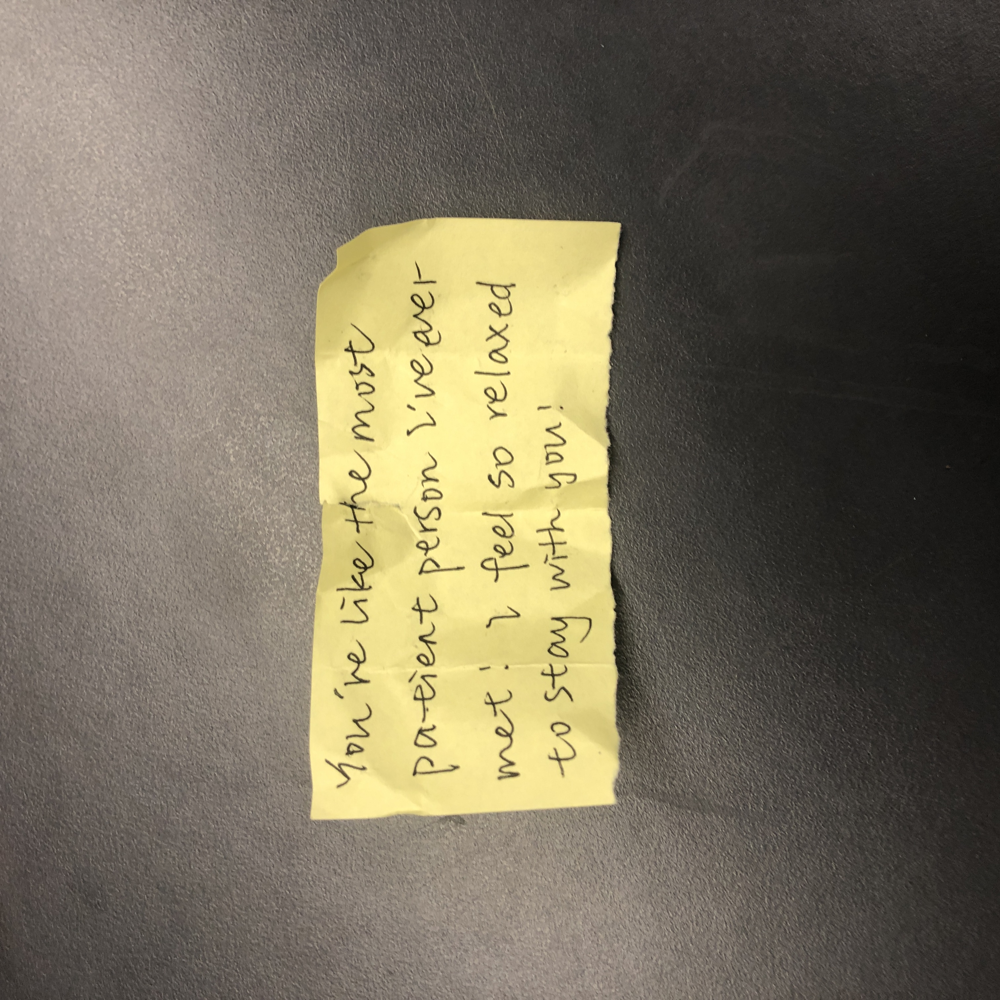

2020.10.22
Day 3 | Candy for Jealousy
Guiding questions
- How do we process with the unspeakable emotions?
- The “masks” of our unspeakable emotions
Inspiration
A friend of mine once said, “I use to be jealous of others too, but then I found that others could be jealous of me, cause I also have things that they don’t have. Then I don’t feel the pressure of jealousy anymore.”
Conceptualization
 Jealousy is a two-sided emotion. It can give us great pressure, but it can also be our motivation. The interesting question is: how to make it a less serious question and relate it to more positive attitude?
On the left is a “Bible of the day” I got from a cathedral in Prague. I’m especially impressed by the sentence “do not let sun set on your anger”, and realized that such short sentences can actually have great power of inspiring
people.
I wish to create a candy(or other snacks if the friend doesn't like candy) box where candies are packed by paper with notes. It could be a gift to someone, and all the notes will be written by his/her friends, of nice things about this
person. When this person feel jealous, he/she could take
a candy and read about positive comments about himself/herself, reminding him/her that he/she doesn’t have to be jealous of other people.
After all, "Sweet things" always make people happy... (●°u°●)
Prototype & Outcome
  TODO
- Buy some candy and write nice words about a friend on the package, ask other friends to participate
- Put the candy in a gift box and give it to the person
- Maybe...ask the friend to record whether the candy and notes can help dealing with jealousy
Reflection
It actually makes people feel better when getting approbation from others. I hope through this project people can grow to be more confident about themselves, and also encourages friends to express nice feelings towards each other more often.